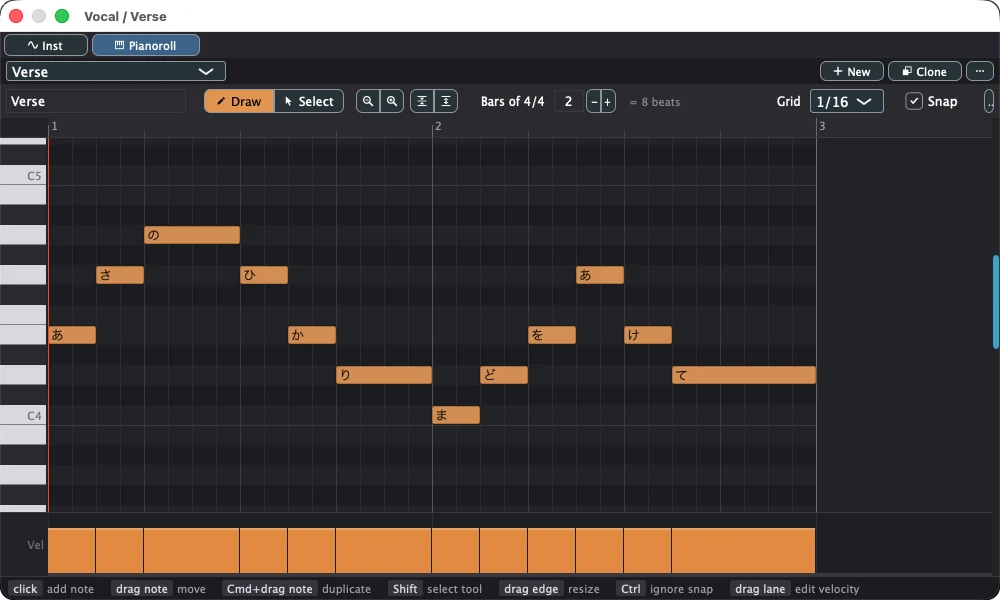
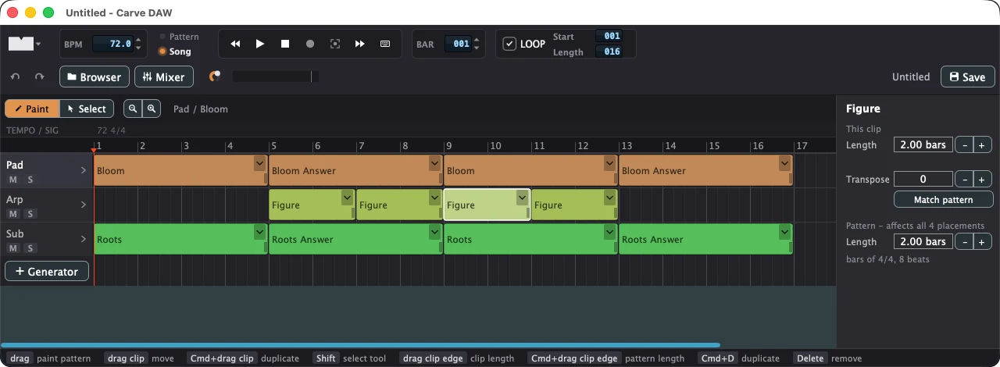
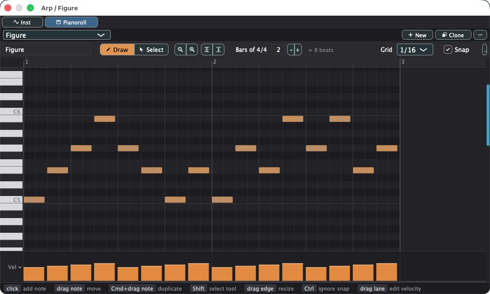
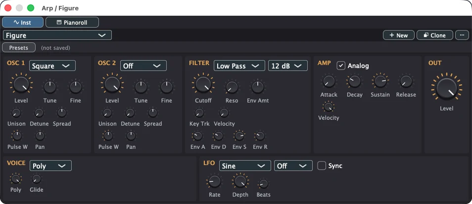
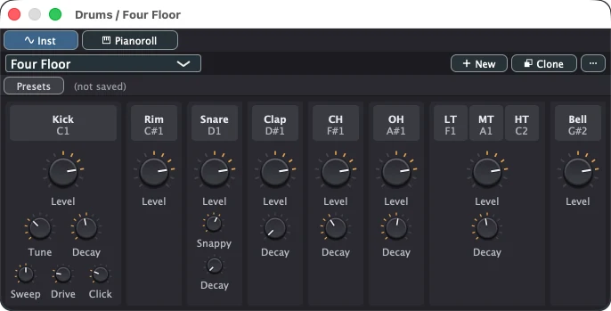
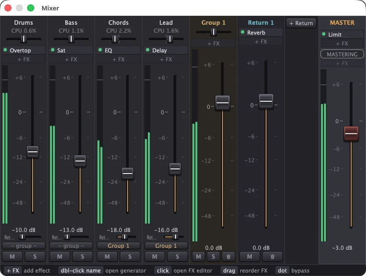
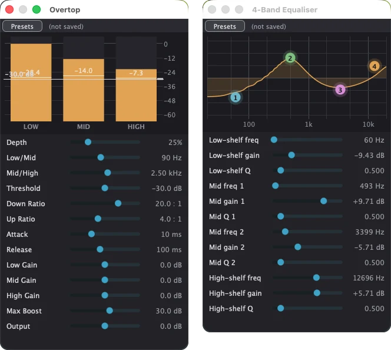

Try it in your browser
The playlist and piano roll, with the Neon Streets sample song. Paint clips, edit a pattern, and every copy of it changes.
A mock for getting the feel of it. The sounds are simple stand-ins for the app's instruments.
The playlist and piano roll, with the Neon Streets sample song. Paint clips, edit a pattern, and every copy of it changes.
A mock for getting the feel of it. The sounds are simple stand-ins for the app's instruments.
Type lyrics on notes for UTAU voicebanks or the built-in modelled voice.

Edit a pattern once, update every copy.

Notes, velocity, quantize, swing.

Synths, analog drums, and modelled instruments ready to play.


Inserts, sends, sidechain, EQ, and Overtop 3-band compression.


Free · No sign-up · Mac & iPad